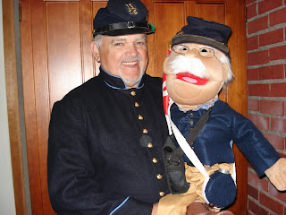

Ambrose joins the Army
5/31/2010
{kind=link}

From Thom Ayers:
Here's a picture of Ambrose and myself. We’re getting our uniforms ready for the Memorial Day parade…..he won’t march, but he’ll address us at the family cook-out afterwards.
I am having a great time, but need to work on my confidence. The grandchildren (9 yrs to 18 months) are always requesting to talk to Ambrose and Brewster so I guess they believe they can talk.
* * * * *
Mr. D note: Thom Ayers has visited a number of classrooms to discuss the Civil War and display equipment, clothing, and food stuffs. In an effort to aid communication with the younger students, Pvt. Ambrose, with all the characteristics which fit the perception of an old Civil War soldier, has been added to the presentations. Ayers told me that lately Pvt. Ambrose has started to develop a comical side which may lead to a complete routine which could be utilized outside the classroom. And since Pvt. Ambrose represents the Union, he has mentioned he thinks he should have a Rebel counterpart. Another battle brewing?